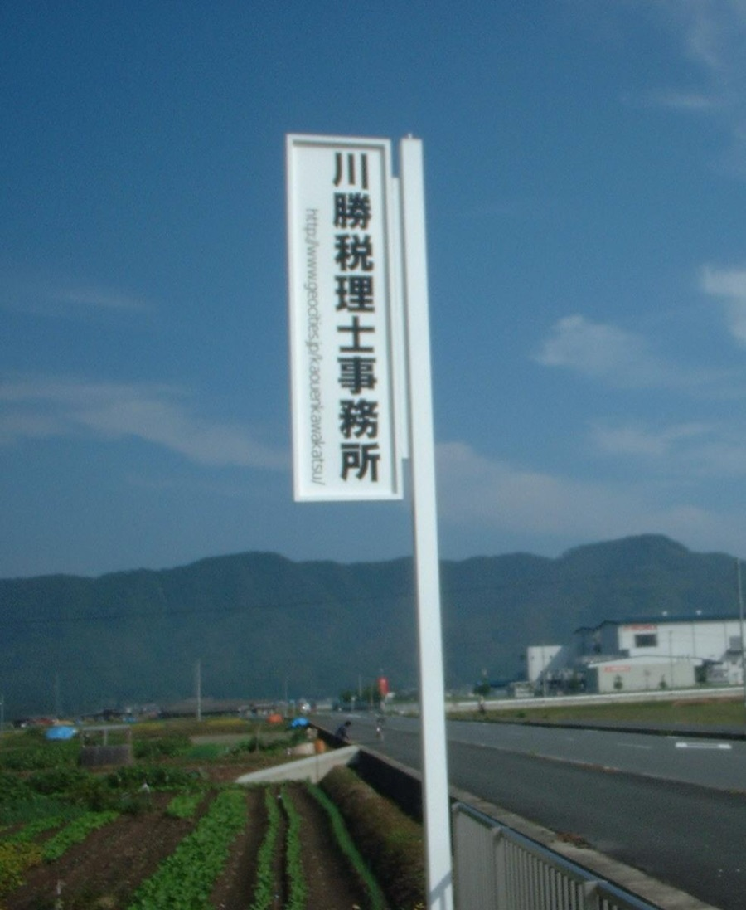

事務所理念
関与先企業さまと個人の方の将来設計をお手伝いし、中堅中小企業と地域社会の発展に貢献する。
良い意味で税理士のイメージを変えていき、税金の申告や会計だけにとどまらず、様々な形で企業さまや個人の方のお手伝いをしていきたいと考えています。
企業経営に関する様々なご相談、個人の方の将来設計のお手伝いなど、企業さまと個人の方の明日を応援いたしますので、お気軽にお声かけくださいませ！
〜『ＫＡ（けいえい）』〜
Ｋは「企業」と「個人」の頭文字、
Ａは「明日」の頭文字です。
ＫＡ（経営）とは、①企業さま②経営者の方や従業員さま の未来を良くしていくことだと想います。
そんな皆さまの未来を少しでも応援していきたいという想いから名付けました。
KA（けいえい）応援業務のご案内
項目を押すと内容が開きます。
企業さまの人財育成の応援
経営幹部研修、従業員さまとの個別面談、会議活性化、・・・
経営計画書の作成応援
金融機関へ提出する各種計画書（設備投資、運転資金、返済見直し）、企業さま内部の予算、・・・
生損保の見直しや企業防衛／生活防衛の応援
企業さまや個人の方の生命保険・損害保険の見直し、保険を活用した企業防衛／生活防衛対策のご提案、・・・
経営承継問題解決の応援
事業引継ぎの対策、経営者塾の開催、友好的なＭ＆Ａ仲介、・・・
事業拡大の応援
増益体質への改善、友好的なＭ＆Ａによる買収、・・・
法人設立や開業の応援
法律上の設立手続き、開業資金の融資、・・・
給与体系や退職金制度の応援
成果主義の導入、賞与支給基準の作成、退職金制度の見直し、・・・
毎月ごとの決算書の作成応援
企業さまの財産状態・経営成績のまとめ、経営必要資料の作成、・・・
※当事務所では、より深く『経営』に関するお手伝いをするため、原則として「記帳代行」（会計データの入力代行）はお引き受けいたしません。
各種税金の申告応援
法人税、所得税（住宅ローン控除、土地の譲渡、・・・）、消費税、相続税、各種税金の税務調査立会、・・・
年末調整計算の応援
年末調整、税務署などへの提出書類の作成
※毎月の給料計算、賞与の計算はお手伝いできませんので、TKCシステムまたはＭｙKomon（マイ顧問）をご利用くださいませ。（導入のお手伝いはいたします。）
- ①お見積りの際には、前年以前の確定申告書などの資料をお預りします。
- ②当事務所では、より深く『経営』に関するお手伝いをするため、原則として「記帳代行」（会計データの入力代行）はお引き受けいたしません。
- ③お見積りで何度かお会いする間に、考え方や感覚が合う税理士かどうかをご判断くださいませ。
もくじ
ご覧になりたい部分をクリックしてくださいませ。
ＭｙＫｏｍｏｎ．ｃｏｍ
当事務所はＭｙＫｏｍｏｎ．ｃｏｍに参加しています。ＭｙＫｏｍｏｎ．ｃｏｍはお客さまと会計事務所をつなぐ新しい会計サービスです。
ただいま30日間無料体験実施中！！ ＭｙＫｏｍｏｎ．ｃｏｍの無料体験については、お気軽にお問い合わせくださいませ！
事務所のご案内
京都府南丹市八木町刑部宮ノ東22番地２
川勝高博税理士事務所
税理士 川勝高博
- TEL
- 0771-42-5811
- FAX
- 020-4663-2283
- メール
- kawakatsu-takahiro@tkcnf.or.jp
【対応可能な地域】
南丹市、亀岡市、船井郡京丹波町、長岡京市、向日市、京都市（京都市西京区、京都市右京区、京都市伏見区、京都市下京区、京都市南区、京都市中京区、京都市上京区、京都市北区、京都市東山区、京都市山科区、京都市左京区）、その他南丹市隣接市区町村を基本としております。その他の地域でも、お気軽にお問い合わせくださいませ！